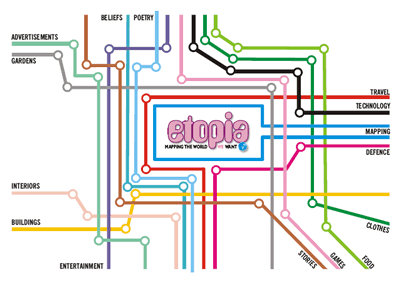
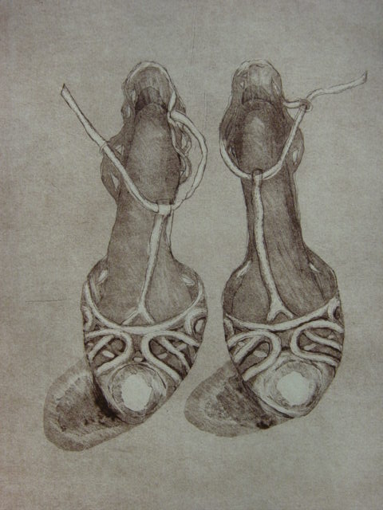
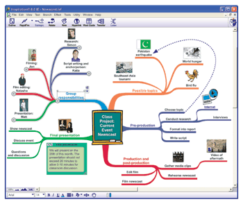

Archive 1 | Archive 2 | Archive 3 | Archive 4 | New Visitors
Archived News Items
- Safe social networking in schools
- Inaugural MirandaMod Unconference
- Etopia: The dawn of an electronic democracy
- ICT and Strategic Concerns Debate on MirandaLink
- CAVE Technology: the Future of Education?
- Report on BETT07
- Seymour Papert injured in Hanoi
- Polish Informatics Matura Examination
- Donated Picture to be Auctioned
- Prague Workshop Thursday 15th to Saturday 17th February 2007, Prague
- Friesland Workshop
- New UK-China Links Established
- 2006 UK-Japan Young Scientist Workshop
- New Version of Think.com announced
- Developing Pedagogies for E-learning Resources (PELRS)
- Boys and Girls and Robotics
- Miranda in Macedonia
- MirandaNet and Interactive Whiteboard Research
Thursday July 10th, 2008 at the WLE Centre
Safe social networking in schools
WLE centre, Institute of Education, University of London 20 Bedford Way, WC1A 2AL
The MirandaNet Fellowship and World Ecitizens
A free workshop for advisers, teachers and student teachers to work collaboratively in discovering
- how social networks and Web 2.0 tools can be used safely in schools for e-learning
- how educational social networking can be embedded in a conventional National Curriculum to enhance outcomes.
Funded by the Oracle Foundation : travel bursaries available.
Followed by an 'unconference' - see next item for further information.
[Go to the Diary Page for further information]
 MirandaMod
Unconference: Thursday 10th July 2008
MirandaMod
Unconference: Thursday 10th July 2008
MirandaNet are pleased to announce a new MirandaNet themed Unconference, MirandaMod. It is planned to hold these regularly at appropriate MirandaNet events and conferences.
This inaugural MirandaMod Unconference will give MirandaNet Members and guests an opportunity to share ideas about the use of technology for learning and to inspire others. This event should be exciting, stimulating and lots of fun and we look forward to seeing you there.
MirandaNet are grateful to Lanway Corporate Business Systems who are sponsoring this event.
Full details on the MirandaMod Page, and you can use this link to sign up.
Please (log in if you are already a wikispaces member or click join to create an account) then add your name - and any other relevant info blog, url etc - appropriate to list - also MirandaMod theme and title of talk (if speaking).
As we are limited to numbers and priority is given to delegates attending this event we would like to invite you to sign on the list and add any talk you might like to give before we throw the event open to others on Thursday
[Go to the Diary Page for further information]
The dawn of an electronic democracy
"Proudly utopian, E-topia is a shared online space that aims to show children from different cultures they have common interests. Too idealistic?" Read Sean Dodson's report in the Guardian.
ICT and Strategic Concerns Debate on MirandaLink
Earlier in 2007 there was detailed debate on this topic on MirandaLink, started by a posting from Allison Allen.
The MirandaNet community responded with a large number of posts to Allison Allen’s concerns about the redundancies amongst ICT advisers in the UK. What we found was that the national ICT community is observing a number of actions and attitudes which are raising urgent and serious concerns about the future of Strategic Technologies in education and impact on the Gross National Product. More...
CAVE Technology: the Future of Education?
"CAVE stands for Cave Automated Virtual Environment. A CAVE is a 3D visual computing environment that recreates space and allows the educator or researcher to interact and visualize complex shapes in an interactive 3D environment. It is a multi-person, room-sized, high-resolution 3D video and audio environment."
If you've ever wondered what CAVE technology is, MirandaNetter Mechelle de Craene gives a brief summary on her blog, complete with an example picture (scroll the page with a wheel mouse to get the full effect) and links to, well, everything including Plato's Republic. Erudite readers will immediately say 'ah yes, the cave analogy'. Better get to her blog and find out more...
http://elgg.net/mechelledc/weblog/154106.html
.jpg "Pupils teaching a teacher at BETT06") Report
on BETT07
Report
on BETT07
Congratulations to our partners, 2Simple, who won another BETT award for their software.
International members who stopped by for wine and pannetone included Alla Kratsova from Russia, Olivia Flores from Mexico, Jan Lepeltak, The Netherlands and Kathy Epps from Switzerland. We also met groups from Nigeria, Saudi Arabia, Lebanon and Turkey.
If there had been a prize for the prettiest stand we would have won it!
Seymour Papert injured in Hanoi
MirandaNetters will have been shocked to hear the news that Seymour Papert (www.papert.org), 'world's foremost expert on how technology can provide new ways to learn', inventor of Logo and author of Mindstorms: Children, Computers and Powerful Ideas, has been hit by a motorbike in Hanoi and has suffered severe head injuries (6 Dec 2006). Following an operation to remove a blood clot, he is reported to be in a critical but stable condition. MirandaLink, our internal message system, has been buzzing with messages wishing him a speedy recovery and reminiscing on the seminal influence he has had on ICT in Education. The following contribution was sent by MirandaNet Fellow Douglas Butler, who was at the conference in Hanoi where Seymour suffered this accident. Douglas also sent the picture of Seymour speaking at the conference (click to enlarge), and also a picture of Seymour's 100 dollar computer.
{kind=link}
{kind=link}
Greetings to all Mirandanetters, from Hanoi
As possibly the only Mirandanet Fellow attending the ICMI Study Conference on Technology in Mathematics Teaching here in Hanoi, I can pass on a few observations. Seymour's opening keynote was totally memorable - here was the 79 year old genius we had all revered for his work with Logo, and, now I read on his website, so much more.
We all found his main theme was inspirational - to encourage us all to reserve 10% of our work to look at the 'bigger picture'. He also brought along the first pre-production $100 laptop for us to see, and he nearly got it going for his talk! No moving parts, all flash memory, wireless internet, and driven by open source software. He was able to announce that a number of developing countries are planning to order large quantities.
That day we had all been joking about the Russian roulette of crossing the very wide road by the campus - a marked zebra which was totally ignored by the hundreds of mopeds constantly streaming by. The next day it was no joke at all, and poor Seymour was in hospital. A dreadful and unnecessary accident. This was one of the major roads in Hanoi still not controlled by any traffic lights or pedestrian signals. The only stroke of good fortune was that the excellent French hospital was close by. I am not aware of any recent bulletins, so we all continue to pray for his recovery.
The conference is over and the hard work begins - to write it up!
We also visited one of Hanoi's three elite schools, a large and imposing institution on the shore of West Lake (built by the French). 3000 students aged 15-18. They were handsome, alert, articulate and friendly. If the future of Vietnam is in their hands we had all better take note - this is a country on the rise!
Read the MirandaLink correspondence
Polish Informatics Matura Examination
Ewa Kolczyk (see picture) has recently (Nov 06) published a study of the new Polish Informatics Matura Examination, which contains a comparison with the equivalent Information Technology AS/A level exam in the UK.
Abstract. One element of the recent educational reform in Poland is the qualification system, which consists of several types of external examinations. The results of the Matura examinations, taken at the end of secondary education, are now replacing entrance examinations to universities, and to other institutions of higher education. The informatics Matura examination, considered as an outcome of the secondary curriculum, and as a regulation for informatics education, could play a significant role in the process of improving school education in this discipline. We decided to compare computing A-level examination in England with the informatics Matura examination in Poland. The comparison is conducted on different levels: subject criteria, scheme of assessment, examples of tasks, examiners reports.
Download the full paper "Informatics Matura in Poland" (PDF 45KB)
Donated Picture to be Auctioned
{kind=link}
We are very grateful to Carole Hensher (www.hensher.co.uk/carole), who has donated a picture to be auctioned for the Etopia Charity.
Carole Hensher is an Associate of the Royal Society of Painter Printmakers (ARE). Her work is exhibited and sold by several London galleries and appears regularly in National Print Exhibitions.
'Still Life' is a steel plate etching with aquatint and burnishing, printed on archive Somerset 300 gsm rag paper.
 Prague
Workshop Thursday 15th to Saturday 17th February 2007, Prague
Prague
Workshop Thursday 15th to Saturday 17th February 2007, Prague
Our second Etopia event is a face to face workshop called :
Towards personalised learning: implementing the philosophy
A CPD event examining the role of ICT in building partnership projects
We had our first MirandaNet workshop in Prague in 1997 so ten years after it seems a good idea to repeat this success. If you do not work in the UK it might be a good idea to see if the British Council in your country might fund you to come.
Friesland Workshop
September saw the first Etopia Workshop in the Netherlands: "The role ICT can play in improving collaborative learning and speaking and listening skills"
You can see from the pictures that Friesland is worth a visit, and not just for the interesting report that Dughall McCormack has written for us!
New UK-China Links Established
{kind=link}
MirandaNet Fellows, Lawrence and Susan Williams, continue their travels around the world, spreading the MirandaNet presence, this time in China. Making the most of a short break in their travel tour of China, they met academics from Beijing Normal (Teacher Training) University, from Beijing Academy of Educational Sciences, and from the city of Shijiahuang ITT College (thanks to an introduction by Professor Margaret Cox), which is located about 100k from Beijing. They also discussed classroom projects with teachers from two Beijing schools (and yes, if you click the image you might be surprised to find that there is an advert for the Olympic Games). Read their first report on the new UK-China links pages.
2006 UK-Japan Young Scientist Workshop
30th July - August 5th
MirandaNet is proud to publish the results of this exciting event which took place at the University of Surrey. This was a unique team-based event for post-16 students from schools in Britain and Japan, devised by Dr Eric Albone, Director of the Clifton Scientific Trust. During the week-long Workshop, students and their teachers, university researchers, and cultural language facilitators worked together, through the process of inquiry, to understand a challenging and complex scientific problem. At the end of the week, students gave presentations of their original research findings. Read all about the Workshop.
{kind=link}
New Version of Think.com announced
Caroline Hook, from the Oracle Foundation, has sent details of the latest version of Think.com. Many MirandaNet members have already used Think for various projects. This version extends its functionality even further. Oracle have supported MirandaNet for many years, and many MirandaNetters already know – and use – Think.com from Oracle. The program has gone through a new development, and the latest version of Think.com, coming in August 2006, introduces a new Projects Space. This enables teachers to easily organise their students into working groups and run projects.
The teacher, in a role as facilitator and guide can create projects and challenges that motivate students to experience and explore relevant, real-world problems and issues. The Project Space provides students with the tools and discussion forums to present their findings, and to create products to share with others what they have learned. Teachers can create projects that within their schools, or join with other schools and students from around the world. (More information...)
Developing Pedagogies for E-learning Resources (PELRS)
Bridget Somekh was the first academic that MirandaNet invited to run a workshop in 1994. Her PALM project in the early nineties provoked our interest in action research which we now call practice-based research. Bridget has sent us the summary of findings of her latest project called Developing Pedagogies for E-learning Resources Project (PELRS for short).
This was a 3 year project exploring the innovative uses of ICT in teaching and learning, based at Manchester Metropolitan University Institute of Education. The General Teaching Council was a key sponsor in terms of both funding and advisory support. For the first 2 years of the project 4 case study schools developed, tested and refined new pedagogic strategies to maximise the potential of e-learning resources.
The 2003 context in which the project began was that schools in England had invested heavily in new technologies recently. Many schools were now equipped with computer suites, high speed internet connections and had access to digital equipment such as laptops, interactive whiteboards, digital still cameras, digital video cameras, and scanners. Research suggested that schools were now looking for ways of using this technology to maximum effect to provide high-quality interactive learning experiences for pupils. But the culture of schooling, and the daily routines and procedures which structure the school day were slow to change, with the result that much of the potential of this technology was being wasted”.
The PELRS report praises teachers for their keenness to challenge a narrow and transmissive model of teaching and learning. The results provide some thoughtful pointers about the 'innovative' pedagogy which is possible if teachers are well supported in making changes in classrooms.
Boys and Girls and Robotics
Can the Lion King reach parts that other teaching techniques will never reach? Read Jocelyn Pride's Case Study.
Miranda in Macedonia
Has Lawrence pulled another rabbit out the box? Read Susan Williams' report to find out.
Mapping: What’s it all about?
 Members
of the Miranda Net Fellowship agree that ownership of learning processes is
an important factor both in raising standards and in making learning more
constructive and learner-driven. Drawing maps for individual and group analysis
is important in this approach to learning. In this context the members welcome
the addition of mind-mapping in Inspiration version 8. In
fact, mapping has been such a successful strategy for promoting learning in
classroom pilots that this professional organisation is exploring the same
techniques in developing teachers' capacity to evaluate their own learning
about ICT. The maps are being piloted as a key tool in action research projects
both in classrooms and as a self-assessment tool for teachers. In particular
this group has explored non-linear writing and multimodal literacy. By talking
about the maps in groups teachers begin to understand their own concepts about
ICT in comparison with the views of colleagues. Teachers' ideas about ICT
change and expand in these discussion face to face and online. They also become
more articulate about their ICT knowledge and understanding.
Members
of the Miranda Net Fellowship agree that ownership of learning processes is
an important factor both in raising standards and in making learning more
constructive and learner-driven. Drawing maps for individual and group analysis
is important in this approach to learning. In this context the members welcome
the addition of mind-mapping in Inspiration version 8. In
fact, mapping has been such a successful strategy for promoting learning in
classroom pilots that this professional organisation is exploring the same
techniques in developing teachers' capacity to evaluate their own learning
about ICT. The maps are being piloted as a key tool in action research projects
both in classrooms and as a self-assessment tool for teachers. In particular
this group has explored non-linear writing and multimodal literacy. By talking
about the maps in groups teachers begin to understand their own concepts about
ICT in comparison with the views of colleagues. Teachers' ideas about ICT
change and expand in these discussion face to face and online. They also become
more articulate about their ICT knowledge and understanding.

Mind Map of a Newscast using Inspiration
Digital communication is changing the way society communications. Using Inspiration is a real opportunity for teachers to experience the impact of the transformation in communication tools which is central to the experience of their young students.
- See Christina Preston's full article on Mapping
- Add a contribution to the new Forum on Non-linear and Multimodal communication
- Have a look at what the Inspiration Group have been posting on their E-Journal
MirandaNet and Promethean ACTIVBoard Research
MirandaNet Scholars and Fellows and Promethean have been working together since 2002 with the aim of making teaching and learning a more effective – and enjoyable – process. Teachers across all key stages and curriculum areas have collaborated in workshops, presentations and case studies to develop strategies to inspire and involve pupils and colleagues. We have now published an attractive brochure called 'Interactive Learning Communities' (PDF 940KB) about this project.
You can read the full story of this project here.
In addition, Christina Preston talked about the interim results from the Promethean ACTIVboard research, Ambassadors for ACTIVlearning. at the Interactive Whiteboard Summit at Wolverhampton University on October 12th 2005. You can read John Cuthell's research report on this site, and you can download the presentation (PowerPoint, 13MB) and the research report (Word, 48KB) here.
More recent Archived News Items
New Projects
MirandaNet and Promethean World are pleased to announce a joint research project into the use of Interactive White Boards. The ACTIVWorld Project builds on earlier work supported by Promethean World, which is reported in detail on the Interactive Whiteboard Project page. There is more information about this project on the MirandaNorth page, where there is a link to John Cuthell's Virtual Learning website and further details of the findings. Visitors can explore parts of the Promethean Ambassadors E-Journal as well.
Our interactive Ejournals have produced a growing number of Case Studies which you can explore.
MirandaNet have published research projects which highlight what kind of ICT CPD works. There are three key areas of publications:
The first is Learning to use ICT in classrooms: teachers’ and trainers’ perspectives (Preston, C 2004 TTA/MirandaNet London) . This reports an investigation into the effectiveness of the NOF programme for training UK teachers in the use of ICT in teaching and learning (follow this link for more information).
- Part One: A summary of the evaluation of English NOF ICT teacher training programme 1999 - 2003 (PDF file, 220K)
- Part Two: Emergent trends from the evaluation of the NOF ICT programme for school trainers, ICT advisers and teacher educators. (PDF file, 672K)
- Part Three: The full evaluation of the English NOF ICT teacher training programme (1999 - 2003) (PDF file, 1MB)
NB: to read these files you will need a PDF reader such
as Acrobat
 .
.
The second arises from a collaboration with Southampton University. See the reports on Supply Teachers, undertaken in collaboration with Select Education (Preston and Danby 2005), and in ECDL for Educators, in collaboration with Aston-Swann (Preston and Danby 2005).
And a third report from 2000 which is still relevant to building communities of practice as an ICT CPD model is Teachers as Innovators: an evaluation of what motivates teachers to use ICT (Preston, Cox and Cox 2004 TTA/MirandaNet London) (summary only: PDF file, 120K)
The World Ecitizens web site and E-Lapa Projects feature work with pupils, some of which can be viewed in the World Ecitizens Gallery, and in the E-Lapa Gallery. Members might want to explore the WE Journal as well.
We have three slightly older Projects which should be of interest to all our members. Have a look at the Web@Classroom Project, an exciting international project involving colleagues in Ireland, Portugal, Spain and the UK. We publish some of the early results, and there are lots of pictures of the pupils in an English school.
Fellows Corner
New Fellow Steve Bunce describes two projects involving Data Logging and Voting Pads (ACTIVote). Have a look at 'A Sense of Murder: making datalogging interesting' and 'Kangaroo Court'.
[Archived items in Fellows Corner]
Website-of-the-Month
Holy Cross School Integrated Web Site
Everyone should have a look at Lawrence Williams' Integrated Web Site. This
site has deservedly been awarded a MirandaNet Rose. Here you will find links
all over the world and into deepest space, with lesson plans to match: www.integratedsite.co.uk
New Visitors
MirandaNet welcomes new visitors. Follow this link for information on how to join the community.
[Back]